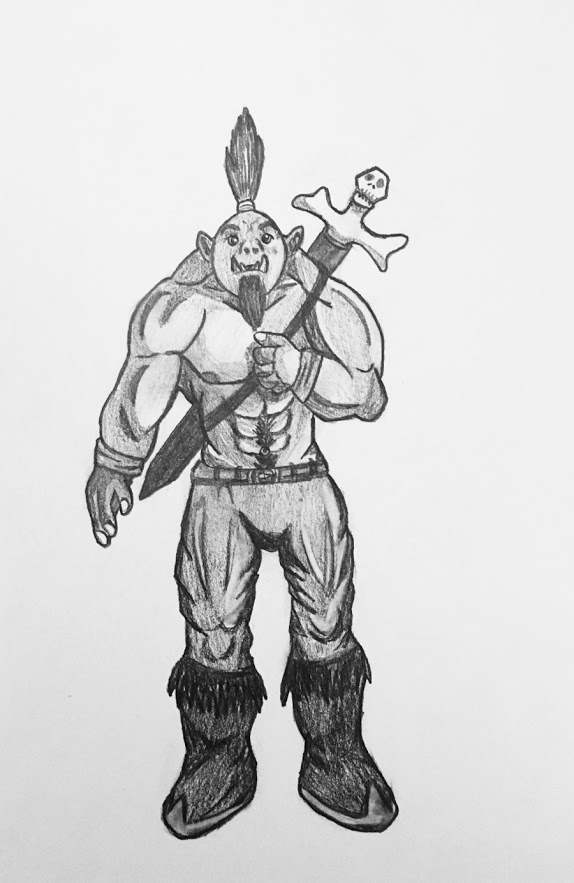

Défi 12 personnages de fantasy : Stryke
Stryke est le chef de l’unité des Renards, une compagnie d’orcs de la série Orcs de Stan Nicholls.
Stryke est un orc tout ce qu’il y a de plus classique dans un univers de fantasy (encore que bien différent de ceux de la Terre du Milieu de Tolkien) : il possède d'énormes défenses dans la bouche, il est plus grand et plus fort qu’un humain, sa musculature est impressionnante et il adore le combat et la guerre.
Dans cette série dédiée aux orcs, Stan Nicholls leur donne une identité un peu plus poussée. D'après Fano, ils ont chacun une personnalité forte, des envies et des besoins, qui vont bien au-delà des clichés habituels. Ils possèderaient un grand sens de l’honneur. C'est cette particularité que j’ai voulue représenter chez Stryke, qui pose son poing sur son coeur, comme pour sceller une promesse.
